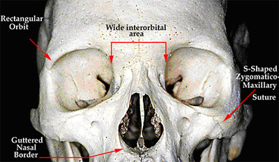
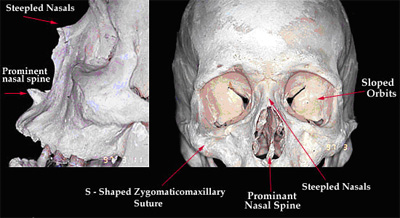
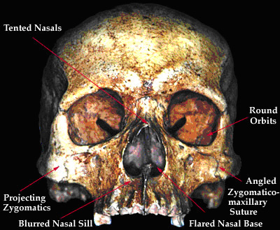

Several cranial features have been found to be distinctive in various ancestries. Of primary significance are two regions of the human skull: the orbits and the nasal region. The skull has two orbits that house the eyeballs. The nasal region is the area in and around the nose.
Negroid Ancestry: Cranial Features
Skull of an Individual of Negroid Ancestry

An individual with Negroid ancestry is more likely to have orbits that are rectangular in shape and a nasal border that is guttered. Additionally, the space between the eyes and nose (interorbital area) tends to be wider than in other groups.
"Forensic anthropologists do not have the luxury of debating the issue of race and ethnicity; rather, they must arrive at an assessment of this demographic characteristic to aid the police in their identification process."
- Source: Dr. Steven N. Byers, Introduction to Forensic Anthropology; A Textbook, Allyn and Bacon (2002), p.150.
Caucasoid Ancestry: Cranial Features
Skull of an Individual of Caucasoid Ancestry

An individual with Caucasoid ancestry tends to have orbits that are sloped. Another distinct feature of Caucasoid individuals is the prominent nasal spine and steepled nasals.
"It is clear that race does mean different things to different people. In the context of forensic anthropology, the term race is unambiguous."
- Source: Dr. Stanley Rhine, Ph.D. (Forensic Anthropologist – University of New Mexico)
Mongoloid Ancestry: Cranial Features
Skull of an Individual of Mongoloid Ancestry

An individual with Mongoloid ancestry tends to have round orbits. Often the base of the nasal area of mongoloid individuals is flared meaning that it appears to widen.
Prehistoric skeletal remains that have been formally buried are most often found lying in the fetal position with knees drawn up to the chest, while skeletons from remains buried during modern times, especially those from industrialized countries, are most often found lying on their backs with their limbs extended straight.